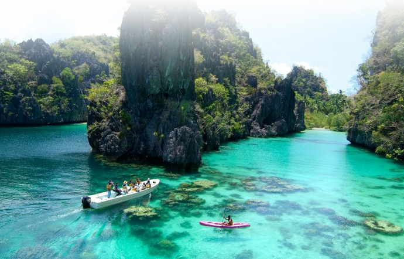
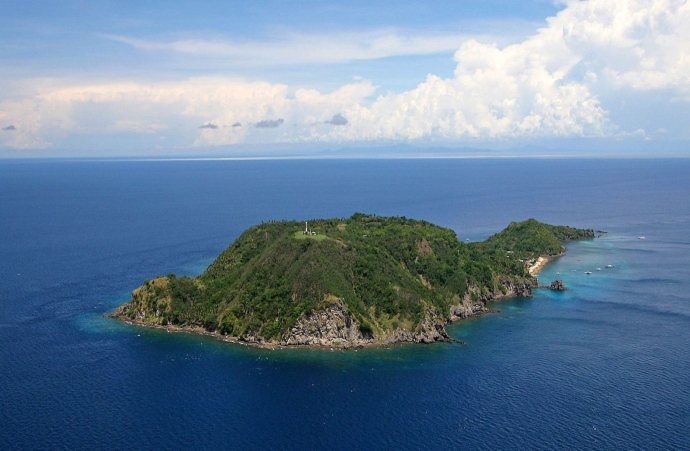

Check out some Popular Destinations
In 1991, Pinatubo peaceful volcano waked up after thousand sleep years in peaceful and friendly appearance. During the volcano gradually cools, Pinatubo is founded. The lake is located on the mouth of Pinatubo volcano in Zambales province, Northwest of Philippines, which is a famous destination of the island country.
El Nido is a famous primitive beach not only with blue water like pearl but also with bays, marble walls, colourful coral reefs, waterfall, and abundant ecosystem. El Nido is located at the end of Palawan Island, 420km far from Manila Capital, Philippines. In 1996, El Nido is ranked on the list of the most attractive and secret islands by Times Magazine. If you have chance, you should use traditional outrigger canoe of Philippines to travel and discover “the heaven” and visit to Puerto Princesa Subterranean River National Park- one of seven world heritages certificated by UNESCO.
If you see appearance, Apo Island is not really attractive as famous island of Philippines because the beach is not too beautiful to tourists who love sunbathing. However, under the appearance, it is a lively story. The preservation area under the sea is recognized as one of the most beautiful diving place by diver community. And Sport Diver- a magazine of England voted the place on the list of “final diving place” of the world.